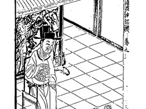
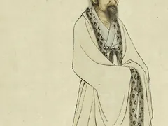
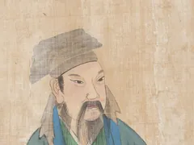
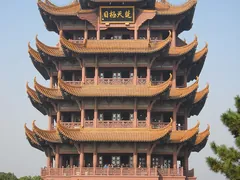

非遗图鉴 / 山海奇谭
01
非遗图鉴 · 民间文学
山海奇谭
民间文学 · 167 项、251 子项 · 第 2 / 3 页（Ⅰ-61 至 Ⅰ-120）
每一条只列名录上的事实：编号、名称、申报地区或单位、公布年份和批次。详情看中国非物质文化遗产网的官方页。在名录检索里查这一门类 →
- Ⅰ-61
仰阿莎
- 贵州省黔东南苗族侗族自治州2008 第二批 · 新增项目官方页 →
- Ⅰ-62
布依族盘歌
- 贵州省盘县2008 第二批 · 新增项目官方页 →
- Ⅰ-63
梅葛
- 云南省楚雄彝族自治州2008 第二批 · 新增项目官方页 →
- Ⅰ-64
查姆
- 云南省双柏县2008 第二批 · 新增项目官方页 →
- Ⅰ-65
达古达楞格莱标
- 云南省德宏傣族景颇族自治州2008 第二批 · 新增项目官方页 →
- Ⅰ-66
哈尼哈吧
- 云南省元阳县2008 第二批 · 新增项目官方页 →
- Ⅰ-67
召树屯与喃木诺娜
- 云南省西双版纳傣族自治州2008 第二批 · 新增项目官方页 →
- Ⅰ-68
米拉尕黑
- 甘肃省东乡族自治县2008 第二批 · 新增项目官方页 →
- Ⅰ-69
康巴拉伊
- 青海省治多县2008 第二批 · 新增项目官方页 →
- Ⅰ-70
汗青格勒
- 青海省海西蒙古族藏族自治州2008 第二批 · 新增项目官方页 →
- Ⅰ-71
维吾尔族达斯坦
- 新疆维吾尔自治区2008 第二批 · 新增项目官方页 →
- Ⅰ-72
- Ⅰ-73
- Ⅰ-74
- Ⅰ-75
彝族克智
- 四川省美姑县2008 第二批 · 新增项目官方页 →
- Ⅰ-76
苗族贾理
- 贵州省黔东南苗族侗族自治州2008 第二批 · 新增项目官方页 →
- Ⅰ-77
藏族婚宴十八说
- 青海省2008 第二批 · 新增项目官方页 →
- Ⅰ-78
- Ⅰ-79
桐城歌
- 安徽省桐城市2008 第二批 · 新增项目官方页 →
- Ⅰ-80
土家族梯玛歌
- 湖南省龙山县2008 第二批 · 新增项目官方页 →
- Ⅰ-81
雷州歌
- 广东省雷州市2008 第二批 · 新增项目官方页 →
- Ⅰ-82
壮族嘹歌
- 广西壮族自治区平果县2008 第二批 · 新增项目官方页 →
- Ⅰ-83
- Ⅰ-84
笑话
- 笑话（万荣笑话）山西省万荣县2008 第二批 · 新增项目官方页 →
- Ⅰ-85
天坛传说
- 北京市东城区2011 第三批 · 新增项目官方页 →
- Ⅰ-86
曹雪芹传说
- 北京市海淀区2011 第三批 · 新增项目官方页 →
- Ⅰ-87
契丹始祖传说
- 河北省平泉县2011 第三批 · 新增项目官方页 →
- Ⅰ-88
赵氏孤儿传说
- 山西省盂县2011 第三批 · 新增项目官方页 →
- Ⅰ-89
白马拖缰传说
- 山西省晋城市城区2011 第三批 · 新增项目官方页 →
- Ⅰ-90
- Ⅰ-91
- Ⅰ-92
防风传说
- 浙江省德清县2011 第三批 · 新增项目官方页 →
- Ⅰ-93
盘瓠传说
- 湖南省泸溪县2011 第三批 · 新增项目官方页 →

槃瓠（新刻出像增補搜神記）图：未知Unknown author / Public domain / 维基共享资源。本站已缩放裁切。 - Ⅰ-94
庄子传说
- 山东省东明县2011 第三批 · 新增项目官方页 →

玄門十子圖 莊子图：Hua Zili (華祖立) / Public domain / 维基共享资源。本站已缩放裁切。 - Ⅰ-95
柳毅传说
- 山东省潍坊市寒亭区2011 第三批 · 新增项目官方页 →
- Ⅰ-96
- Ⅰ-97
布袋和尚传说
- 浙江省奉化市2011 第三批 · 新增项目官方页 →
- Ⅰ-98
钱王传说
- 浙江省临安市2011 第三批 · 新增项目官方页 →
- Ⅰ-99
- Ⅰ-100
王羲之传说
- 浙江省绍兴市2011 第三批 · 新增项目官方页 →

Portraits of Famous Men: Wang Xizhi图：Unknown Chinese artist / Public domain / 维基共享资源。本站已缩放裁切。 - Ⅰ-101
李时珍传说
- 湖北省蕲春县2011 第三批 · 新增项目官方页 →
- Ⅰ-102
蔡伦造纸传说
- 陕西省汉中市2011 第三批 · 新增项目官方页 →
- Ⅰ-103
牡丹传说
- 山东省菏泽市牡丹区2011 第三批 · 新增项目官方页 →
- Ⅰ-104
泰山传说
- 山东省泰安市2011 第三批 · 新增项目官方页 →
泰山南天门十八盘岩层陡立，倾角70-80°，在1千米的距离内升高了400米图：Charlie fong / Public domain / 维基共享资源。本站已缩放裁切。 - Ⅰ-105
黄鹤楼传说
- 湖北省武汉市武昌区2011 第三批 · 新增项目官方页 →

The Yellow Crane Tower in Wuhan.图：MonsieurRoi / CC BY-SA 3.0 / 维基共享资源。本站已缩放裁切，按 CC BY-SA 3.0 同样许可共享。 - Ⅰ-106
- Ⅰ-107
珞巴族始祖传说
- 西藏自治区米林县2011 第三批 · 新增项目官方页 →
- Ⅰ-108
阿尼玛卿雪山传说
- 青海省果洛藏族自治州2011 第三批 · 新增项目官方页 →
- Ⅰ-109
锡伯族民间故事
- 辽宁省沈阳市2011 第三批 · 新增项目官方页 →
- Ⅰ-110
嘉黎民间故事
- 西藏自治区嘉黎县2011 第三批 · 新增项目官方页 →
- Ⅰ-111
海洋动物故事
- 浙江省洞头县2011 第三批 · 新增项目官方页 →
- Ⅰ-112
- Ⅰ-113
坡芽情歌
- 云南省富宁县2011 第三批 · 新增项目官方页 →
- Ⅰ-114
- Ⅰ-115
- Ⅰ-116
陶克陶胡
- 吉林省前郭尔罗斯蒙古族自治县2011 第三批 · 新增项目官方页 →
- Ⅰ-117
密洛陀
- 广西壮族自治区都安瑶族自治县2011 第三批 · 新增项目官方页 →
- Ⅰ-118
亚鲁王
- 贵州省紫云苗族布依族自治县2011 第三批 · 新增项目官方页 →
- Ⅰ-119
目瑙斋瓦
- 云南省德宏傣族景颇族自治州2011 第三批 · 新增项目官方页 →
- Ⅰ-120
洛奇洛耶与扎斯扎依
- 云南省墨江哈尼族自治县2011 第三批 · 新增项目官方页 →